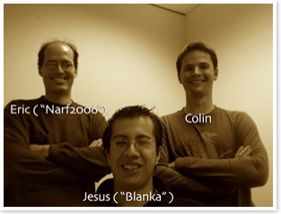

The Organizer
Colin Nederkoorn
Houston, TX
Born: Singapore, Singapore
Education: BS in Management, Rensselaer Polytechnic Institute
Occupation: Entrepreneur
Interests: Cooking, Guitar, Finance, Running, Soccer
Thumbs up for: Web 2.0, Skype, Neil Strauss
Next Project: method 7
OSfiliation: OS X
The Winners
Jesus Lopez Amaro (aka "Blanka")
Alameda, CA, USA
Born: Mexico City, Mexico
Education: BS in CS/EE
Occupation: Software Architect
Interests: snowboarding, languages, reverse engineering
Thumbs up for: super slick GUIs, nice cars, Ida Pro
Next: G35 carputer
OSfiliation: Windows
Eric Wasserman (aka "narf2006")
Berkeley, CA, USA
Born: Houston TX
Education: BA Rice University Physics, Math, Philosophy; PhD Harvard University in physics
Occupation: Software Engineer/Manager
Interests: cycling, cooking, tinkering
Thumbs up for: French wine, good food, the iPod
OSfiliation: Mac OS X
Special Thanks
Thanks to everyone who donated to make this possible. For a list of Donors, see the Donors page. In addition to financial donations, many people contributed time, resources and effort:
Rob Sandusky